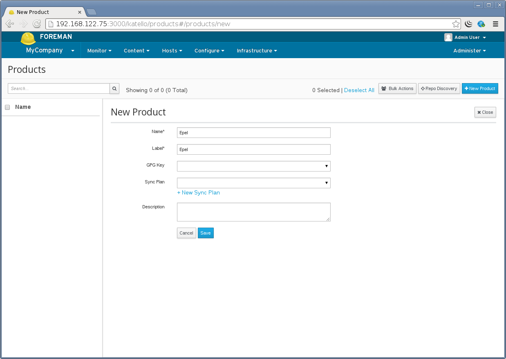
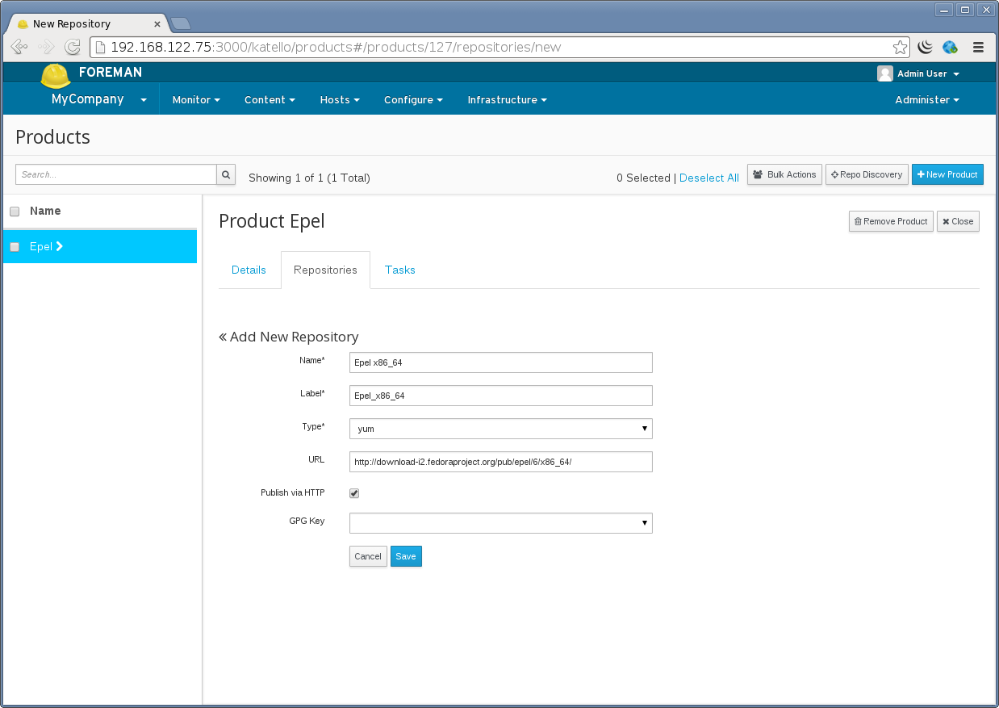
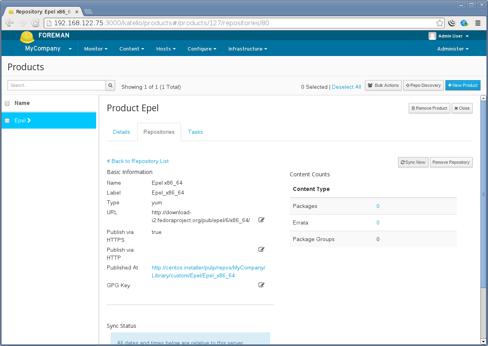
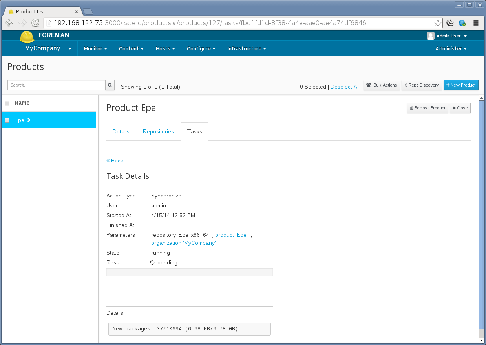
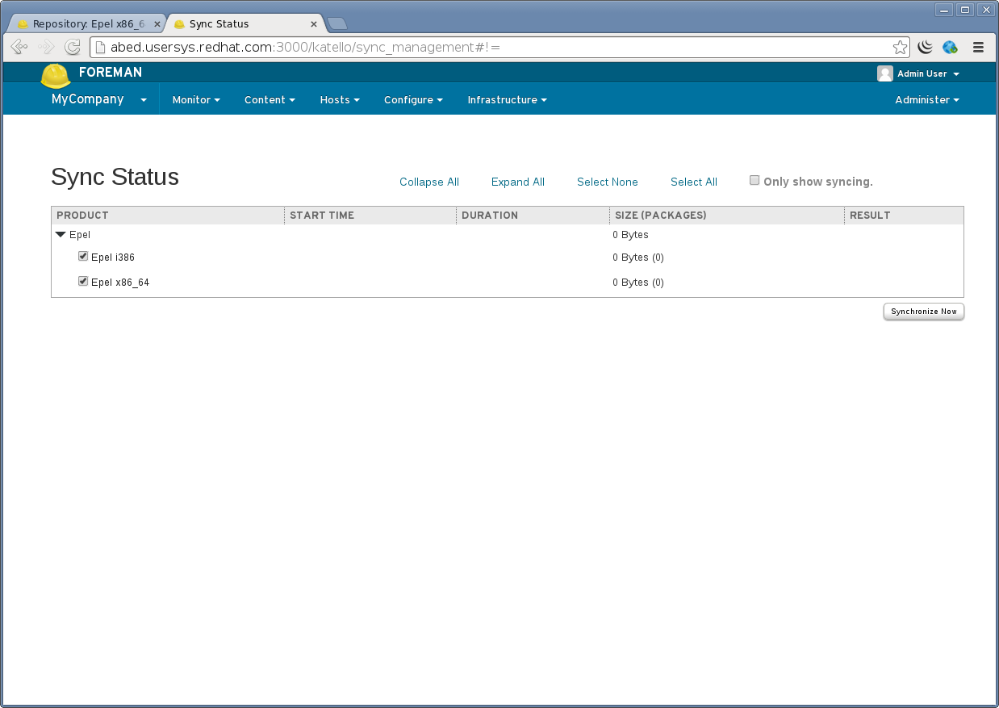
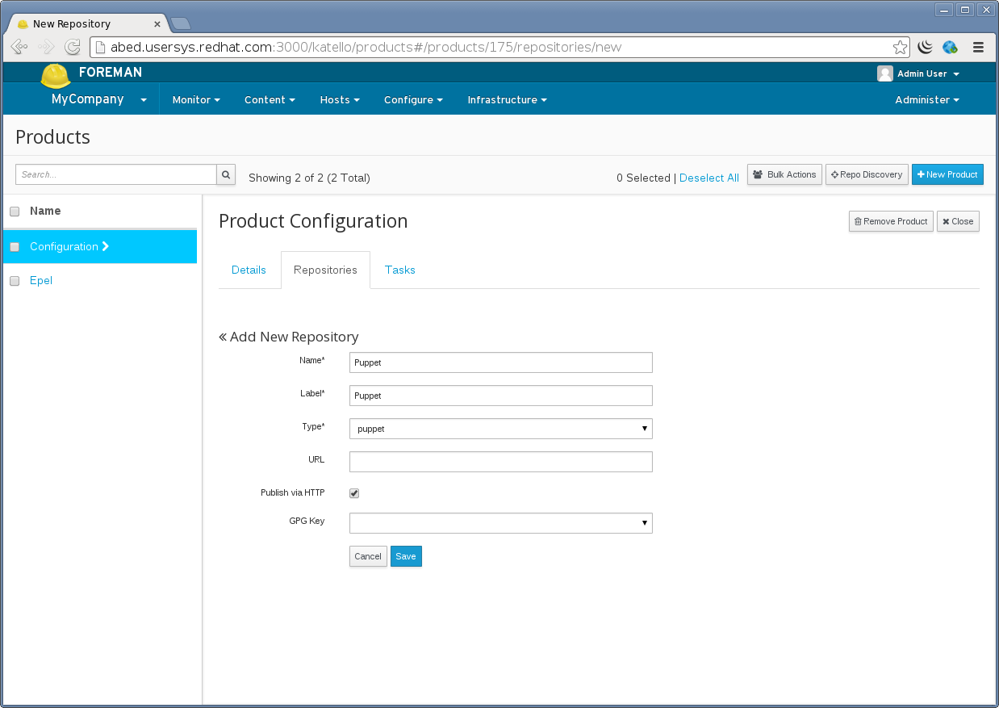
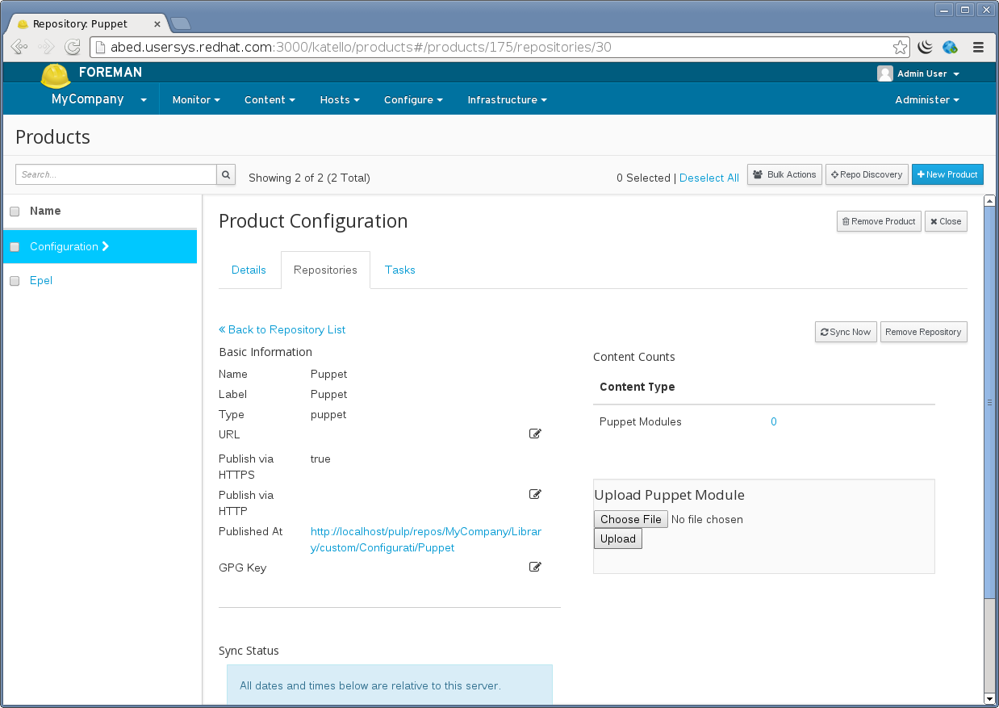
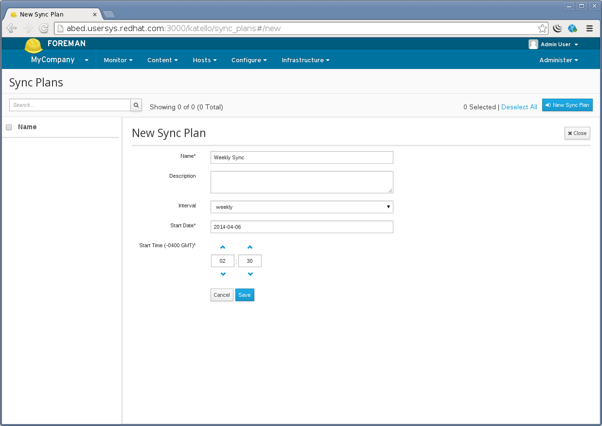
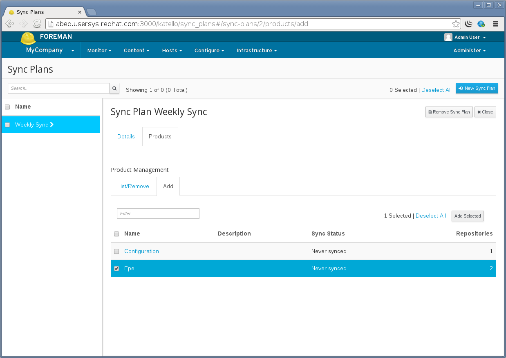

2.1: Content
Content
Katello can currently host two different types of content, RPMs and puppet modules.
RPMs and Puppet Modules can be synced from an external resource or can be uploaded directly.
The advantages to using Katello to mirror your local content are:
- Reduce bandwith usage and increase download speed by having client machines pull updates from Katello
- Provision hosts using local Repositories covered HERE TODO
- Customize content locally, covered HERE TODO
Definitions
- Repository - Collection of content (either RPM or puppet)
- Product - Collection of Repositories, Content Hosts subscribe to a product
- Library - A special pre-created Lifecycle Environment where Repositories are created and content is synced or uploaded to. A Content Host can subscribe to library and receive content as soon as the content is synced or uploaded.
Creating a Product
From the web UI, navigate to:
Content > Products > New Product (top right)

Creating a Repository
From the web UI, navigate to:
Content > Products > Select desired product > Create Repository (right hand side)
Note the following options:
- Publish via HTTP: allows access to the Repository without any restriction. Unless you desire to restrict access to your content in this Repository, we recommended to leave this checked.
- URL: If you are syncing from an external Repository (yum or puppet), this would be filled in. This can be changed, added, or removed later. For example if you are wanting to create a mirror of EPEL, you would set this to ‘http://dl.fedoraproject.org/pub/epel/6/x86_64/’.

Syncing a Repository
From the web UI, navigate to:
Content > Products > Select desired product > Select the Repository > Sync Now

The progress will be displayed:

Syncing multiple repositories
To easily sync multiple repositories at once and track their progress, navigate to:
Content > Sync Status
From here you can expand the desired products, and select multiple repositories to sync.

Uploading RPM Content
Uploading RPM content directly is not currently supported. You will need to build a custom yum Repository. TODO Provide instructions on creating a custom yum repo
Uploading Puppet Content
To upload puppet modules, first create a Repository with type puppet (similarly to creating a yum Repository above):

When creating this Repository the URL field can be left blank.
Puppet modules can be uploaded via the Web UI, navigate to:
Content > Repositories > Products > Select desired Product > Select desired Puppet Repository > Select file on the right

Subscribing a System to a Product for yum content
To read about registering systems and subscribing them to the Product click TODO.
Scheduling Repository Synchronization
Sync plans give you the ability to schedule Repository synchronization on a daily, weekly, or a monthly basis. Sync Plans are applied to Products and thus all Repositories within a Product will be synchronized according to the products plan.
Creating a Sync Plan
If you would like to schedule certain repositories to sync on a daily, weekly, or monthly basis, Sync Plans give you this capability.
To create a Sync Plan, navigate to:
Content > Sync Plans > click “New Sync Plan” on the upper right
The Start Date and Start Time fields are used as the day of the week/month and time of the day to run the re-occuring syncs.
For example a sync plan that starts on Sunday 2014-04-06 at 2:30 will occur every Sunday at 2:30 every week if it has a weekly interval. If on a monthly interval it would sync every month on the 6th day at 2:30.

Assigning a Sync Plan to a Product
Navigate to:
Content > Sync Plans > Select your Sync Plan > Products > Add
Then select the Products you want to add and click “Add Selected” in the upper right.

GPG Keys
To learn about securing your packages and Repositories with GPG Keys click here. TODO